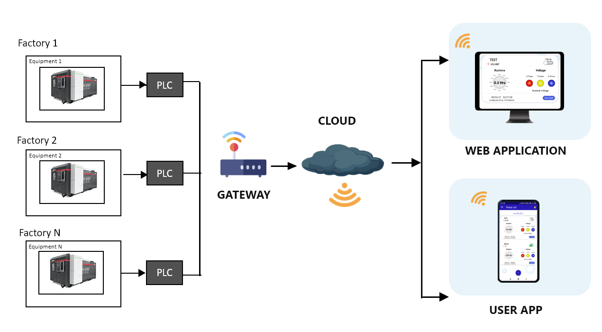

OEE measurement is Key Performance Indicator of the manfacturing process.. Kfx OEE analyse provides the performance insights of the per plant, per work center,per month for plant,permonth for work center , perday of month,permaterial for workcenter. Kfx OEE is integrated with Industry 4.0 for Predictive Maintenance and Condition monitoring.
Kfx OEE solution provides the sensors, controllers,HMI and other process equipemnt monitoring devices for pharma, chemical, cement , Gas&oil and food processing industries.
